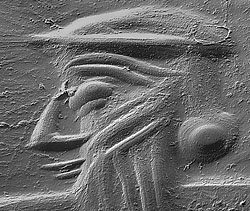

Prime cut: Redating the jeweller's wheelThe engraving wheel has been the most important tool for working precious stones and gems for thousands of years. New work at the British Museum, sponsored by the Townley Group and the British Museum Society, has dated this innovation to over 1000 years later than has been generally believed. This was done by careful study of the engravings on cylinder seals from ancient Mesopotamia, using a scanning electron microscope. From about 3000 BC, designs were produced by flaking off minute chips of stone, by gouging or hammering with a flint or bronze tool. Wheel-cutting, the standard approach of jewellers in the modern world, was not introduced until about 1600 BC. Cylinder seals were rolled into clay and left an impression which indicated the ownership or authorship of a document in cuneiform writing. They were engraved with images and inscriptions which reveal much information about life in the period. Seals were worn as jewellery by their owners and were frequently made of semi-precious hard stones such as rock crystal, chalcedony and lapis lazuli. These seals provide a record of the techniques used by the craftsmen who engraved them over some 3000 years. By carefully taking casts of cylinder seals with dental resin, Margaret Sax, Nigel Meeks and Dominique Collon were able to examine the engravings using a scanning electron microscope. They compared these with experimental engravings done in the laboratory to identify the techniques used by the ancient craftsmen. They were then able to build up a chronological sequence for the use of different engraving methods. The introduction of wheel cutting encouraged the production of seals in harder, more precious, stones and allowed a higher throughput. It also allowed the development of a more fluid engraving style. It appears to be part of a complex series of improvements in rotary technology, including the development of the fast potters wheel, and spoked chariot wheels.
Reference: Sax,M., Meeks,N., and Collon,D. 2000,'The Introduction of the Lapidary Engraving Wheel in Mesopotamia'. Antiquity 74, 380-387 More details: www.thebritishmuseum.ac.uk/science/seals Contact: Science@thebritishmuseum.ac.uk |